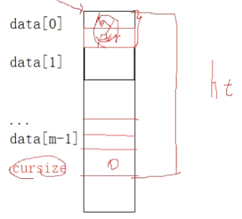
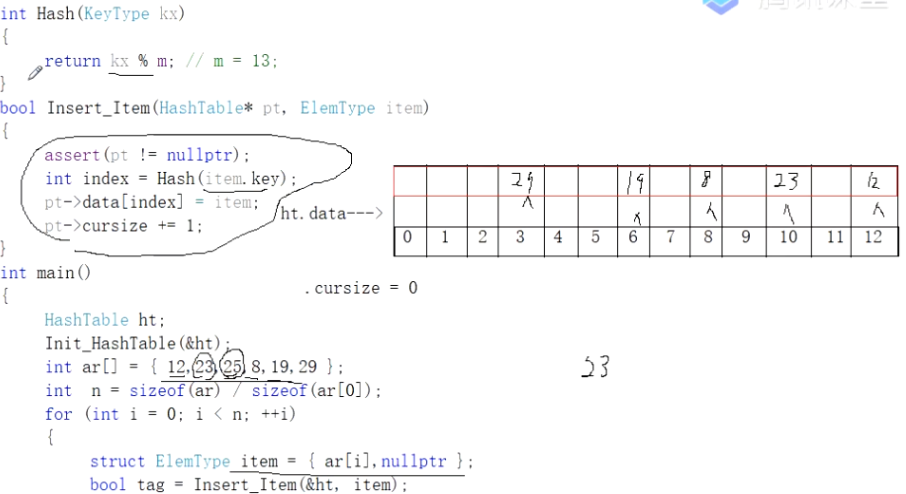
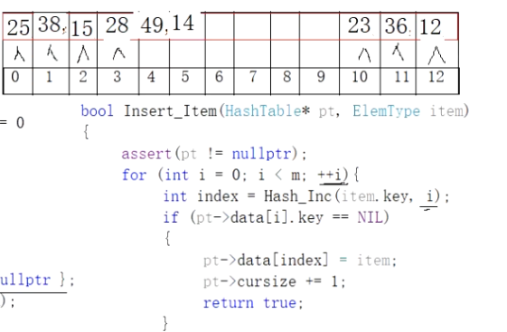
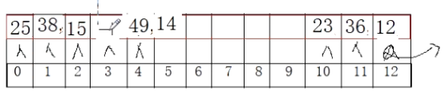
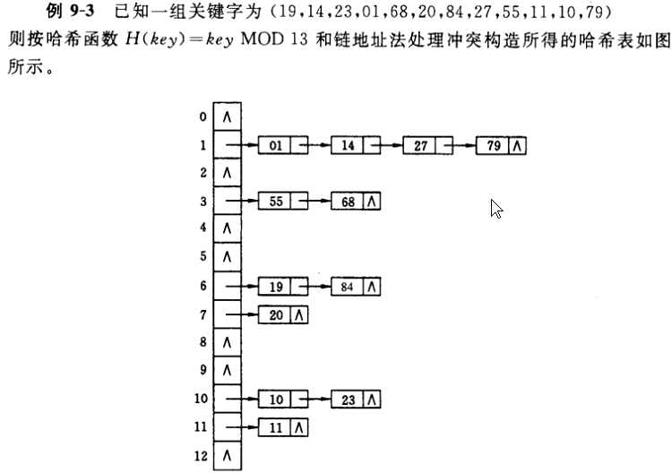
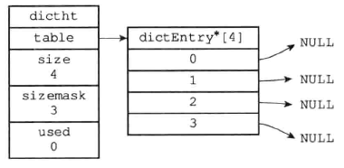
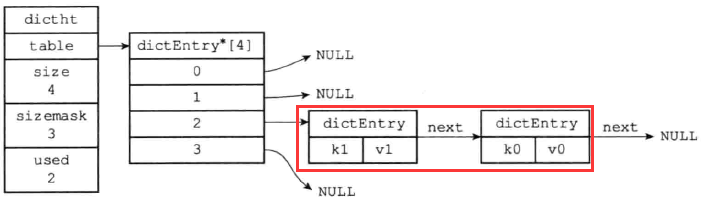
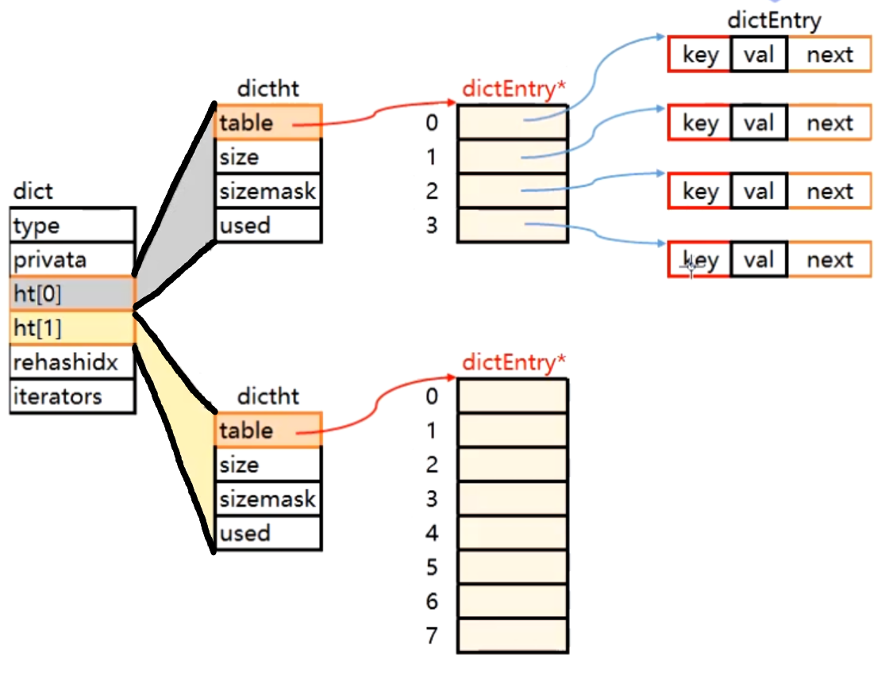

图书馆借书问题，图书馆有成千上万本图书，最初，需要有一个本子记录哪一天学生记录的情况。最初以日期为编号记录某一天来借书的情况。当有人来还书时，需要先问清借书者是几号来借的，然后还要在这天的记录里依次找到具体信息。如果借书者清楚自己是几号借的还好说，但是如果不记得了呢？比如说他只记得好像是上上个月来借的，那么就需要一天一天的从头到尾查找记录，显然效率是低下的。000 0000 0000 ~ 199 9999 9999页的本子，某同学借书时让他提供电话号码，以电话号码为基准记录信息。待还书时，只需要报电话号则可以直接找到记录。但此方法不现实，因为本子太厚，要花费的空间太大。
严蔚敏版本的数据结构教材中指出，在诸如线性表、树结构中，“记录”中结构中的相对位置是随机的，和“记录”的关键字之间不存在确定的关系，因此，在结构中查找记录时需进行一系列和关键字的比较。比如，数组存放的从小到大的10个数据，要用二分查找法找出某value的下标值就需要一直探测。这一类查找方法建立在“比较”的基础上。在顺序查找时，比较的结果为“=”与“≠”两种可能；在折半查找、二叉排序树查找和B-树查找时，比较的结果为“<”、“=”和“>”3种可能。查找的效率依赖于查找过程中所进行的比较次数。
我们所向往的理想的情况是希望不经过任何比较，一次存取便能得到所查记录，那就必须在记录的存储位置 和它的关键字 之间建立一个确定的对应关系f，使每个关键字和结构中一个惟一的存储位置相对应。因而在查找时只要根据这个对应关系f找到给定值K的“像”f(K)便能找到其存储位置。若结构中存在关键字和K相等的记录，则必定在f(K)这个存储位置上，由此不需要比较便可直接取得所查记录。在此我们称这个对应关系f为哈希（Hash）函数 ，由此思想建立的表称为哈希表 。
1 2 3 4 5 6 7 8 9 10 11 12 13 14 15 #include <stdio.h> #include <assert.h> #define NIL -1 #define m 13 typedef int KeyType;struct ElemType { KeyType key; void * ptr; }; typedef struct { ElemType data[m]; int cursize; }HashTable;

1 2 3 4 5 6 7 8 9 10 11 12 13 14 15 16 17 18 19 20 21 22 23 24 25 26 27 28 29 30 31 32 33 void Init_HashTable (HashTable* pt) { assert(pt != nullptr); pt->cursize = 0 ; for (int i=0 ;i<m;++i) { pt->data[i].key = NIL; pt->data[i].ptr = nullptr; } } int Hash (KeyType kx) { return kx%m; } bool Insert_Item (HashTable* pt, ElemType item) { assert(pt != nullptr); int index = Hash(item.key); pt->data[index] = item; pt->cursize += 1 ; } int main () { HashTable ht; Init_HashTable(&ht); int ar[]={12 ,23 ,25 ,8 ,19 ,29 }; int n=sizeof (ar)/sizeof (ar[0 ]); for (int i=0 ;i<n;++i) { struct ElemType item = bool tag = Insert_Item(&ht,item); } }
但是这种Insert_Item函数是有问题的，没有解决哈希冲突问题，比如在插入key为25的元素时会替换掉前期已经插入的key为12的元素。

以下来通过增量探测法来解决哈希冲突。
1 2 3 4 5 6 7 8 9 10 11 12 13 14 15 16 17 18 19 20 21 22 23 int Inc (int i) { return i; } int Hash_Inc (KeyType kx, int i) { return (Hash(kx) + Inc(i))%m; } bool Insert_Item (HashTable* pt, ElemType item) { assert(pt != nullptr); for (int i = 0 ;i<m;++i) { int index = Hash_Inc(item.key, i); if (pt->data[i].key == NIL) { pt->data[index] = item; pt->cursize += 1 ; return true ; } } return false ; }
1 2 3 4 5 6 7 8 9 10 11 12 int main () { HashTable ht; Init_HashTable(&ht); int ar[]={12 ,15 ,28 ,23 ,25 ,38 ,36 ,49 ,14 }; int n=sizeof (ar)/sizeof (ar[0 ]); for (int i=0 ;i<n;++i) { struct ElemType item = bool tag = Insert_Item(&ht,item); } }

这种线性探测法虽然解决了哈希冲突，但最终的数据分布太堆积化。可以通过平方探测法改善此问题。
1 2 3 4 int Inc (int i) { return i*i; }
但无论是线性探测法存储还是平方探测法存储，在这种纯顺序表（数组）中实现哈希表会遇到一个严重的问题！即插入数据后，不能轻易删除某一个数据，因为删除了某一数据后，查找另外的数据就会出现数据断层导致不能正常探测。比如下图：如果把3下标的28删除，则查找key为49的元素时，第一次探测49%13=10，23不等于49，第二次探测（线性探测，下标+1），36不等于49，第三次探测，12不等于49，……，直到探测到下标3，发现key值为-1。如果我们停止探测返回，则是错误的；所以我们只能遇到-1不停止继续探测，那么就失去了哈希表的意义，这相当于在查某个key对应的value时有可能把整个表都遍历了一遍。
1 2 3 4 5 6 7 8 9 10 11 12 13 14 15 16 void * FindValue (HashTable* pt, KeyType kx) { assert(pt != nullptr); for (int i = 0 ;i<m;++i) { int pos = Hash_Inc(kx,i); if (pt->data[pos].key==kx) { return pt->data[pos].ptr; } if (pt->data[pos].key==NIL) { return nullptr; } } }

所以我们要改变这种存储哈希表的方式，改用链地址法 存储。（视频01:27:42）

看图设计结构
1 2 3 4 5 6 7 8 9 10 11 12 13 14 15 16 17 18 19 #include <stdio.h> #include <assert.h> #define m 13 typedef int KeyType;typedef struct ElemType { KeyType key; void * ptr; }ElemType; typedef struct HashNode { ElemType data; struct HashNode * next ; }HashNode; typedef struct HashTable { HashNode* table[m]; int cursize; }HashTable;
1 2 3 4 5 6 7 8 9 10 11 12 13 14 15 16 17 18 19 20 21 22 23 24 25 26 27 28 29 30 31 32 33 34 35 36 int Hash (KeyType kx) { return kx % m; } void Init_Hash (HashTable* pt) { assert(pt!=nullptr); for (int i = 0 ;i<m;++i) { pt->table[i] = nullptr; } pt->cursize = 0 ; } void Insert_Item (HashTable* pt, ElemType item) { assert(pt!=nullptr); int index = Hash(item.key); HashNode* s = (HashNode*)malloc (sizeof (HashNode)); if (nullptr == s) exit (1 ); s->data = item; s->next = pt->table[index]; pt->table[index] = s; pt->cursize += 1 ; } int main () { int ar[]={1 ,55 ,19 ,20 ,10 ,11 ,14 ,68 ,84 ,23 ,27 ,79 }; int n = sizeof (ar)/sizeof (ar[0 ]); HashTable ht; Init_Hash(&ht); for (int i = 0 ;i<n;++i) { ElemType elem = {ar[i],nullptr}; Insert_Item(&ht,elem); } }
1 2 3 4 5 6 7 8 9 void Init_Hash (HashTable* pt) { assert(pt != nullptr); for (int i = 0 ;i<m;++i) { pt->table[i]=nullptr; } pt->cursize=0 ; }
1 2 3 4 5 6 7 8 9 10 11 12 13 void Insert_Item (HashTable* pt, ElemType item) { assert(pt != nullptr); int index = Hash(item.key); HashNode* pnode = (HashNode*)malloc (sizeof (*pnode)); if (nullptr == pnode) exit (1 ); pnode->data = item; pnode->next = pt->table[index]; pt->table[index] = pnode; pt->cursize++; }
查看字典中是否已存在某key值对应的节点并返回。
1 2 3 4 5 6 7 8 9 10 HashNode* FindNode (HashTable* pt, KeyType kx) { int index = Hash(kx); HashNode* p = pt->data[index]; while (p != nullptr && p->item.key != kx) { p = p->next; } return p; }
自己写的
1 2 3 4 5 6 7 8 9 10 11 12 13 14 15 16 17 void ClearTable (HashTable* pt) { for (int i = 0 ;i < m;++i) { HashNode* p = pt->data[i]; HashNode* q = nullptr; while (p) { q = p->next; free (p); pt->cursize--; p = q; } pt->data[i] = nullptr; } }
老师写的
1 2 3 4 5 6 7 8 9 10 11 12 13 void ClearHash (HashTable* pt) { for (int i = 0 ;i<m;++i) { while (pt->data[i]!=nullptr) { HashNode* q = pt->data[i]; pt->data[i]=q->next; free (q); } } pt->cursize=0 ; }
1 2 3 4 5 6 7 8 9 10 11 12 13 14 15 16 17 18 19 20 21 22 23 24 25 26 27 28 29 30 31 void RemoveNode (HashTable* pt, KeyType kx) { int index = Hash(kx); HashNode* p = pt->data[index]; if (p == nullptr) exit (1 ); HashNode* q = p->next; if (p->item.key == kx) { pt->data[index] = q; free (p); } else { while (q != nullptr && q->item.key != kx) { p = p->next; q = q->next; } if (q == nullptr) exit (1 ); else { p->next = q->next; free (q); } } pt->cursize--; return ; }
老师写法
1 2 3 4 5 6 7 8 9 10 11 12 13 14 15 16 17 18 19 20 21 22 23 24 25 26 27 28 bool Remove (HashTable* pt,KeyType kx) { assert(pt!=nullptr); int index=Hash(kx); HashNode* pr=nullptr; HashNode* p=pt->table[index]; while (p!=nullptr) { if (p->item.key==kx) { if (pr!=nullptr) { pr->next=p->next; } else { pt->table[index]=p->next; } free (p); pt->total-=1 ; return true ; } pr=p; p=p->next; } return false ; }
定义大小为100 的整型数组，使用随机函数给数组元素赋值。数值的范围是1 … 100 ，并且不容许重复。
1 2 3 4 5 6 7 8 9 10 11 12 13 14 15 16 17 18 19 20 21 22 23 int * My_NonRepeating_RandArr (int * ar, int n) { assert(ar != nullptr); int br[101 ]; for (int i = 0 ;i < n + 1 ;++i) { br[i]=0 ; } int temp; srand(time(NULL )); int i = 0 ; do { temp = rand() % 100 + 1 ; if (br[temp] != 1 ) { br[temp] = 1 ; ar[i] = temp; ++i; } } while (i<n); return ar; }
如果题中数组大小改为1000000，那么数组开辟空间就很大，如果仍然按照旧的方式去做肯定是对程序不利的。考虑用哈希算法解决！
1 2 3 4 5 6 7 8 9 10 11 12 13 14 15 16 17 18 19 20 21 22 23 24 25 26 27 28 29 30 31 32 33 34 35 36 37 38 39 40 41 42 43 44 45 46 47 48 49 50 51 52 53 54 55 56 57 58 59 60 61 62 63 64 65 66 67 68 69 70 71 72 73 74 75 76 77 78 79 80 #include <stdio.h> #include <assert.h> #define m 100 typedef int KeyType;typedef struct ElemType { KeyType key; void * ptr; }ElemType; typedef struct HashNode { ElemType data; struct HashNode * next ; }HashNode; typedef struct HashTable { HashNode* table[m]; int cursize; }HashTable; void Init_Hash (HashTable* pt) { assert(pt != nullptr); for (int i = 0 ;i<m;++i) { pt->table[i]=nullptr; } pt->cursize=0 ; } void Insert_Item (HashTable* pt, ElemType item) { assert(pt != nullptr); int index = Hash(item.key); HashNode* pnode = (HashNode*)malloc (sizeof (*pnode)); if (nullptr == pnode) exit (1 ); pnode->data = item; pnode->next = pt->table[index]; pt->table[index] = pnode; pt->cursize++; } int Hash (KeyType kx) { return kx%m; } HashNode* FindValue (HashTable* pt, KeyType kx) { int index = Hash(kx); HashNode* p = pt->table[index]; while (p != nullptr && p->data.key != kx) { p=p->next; } return p; } int * My_NonRepeating_Hash (int * ar, int n) { assert(ar != nullptr); HashTable ht; Init_Hash(&ht); int temp; srand(time(NULL )); int i = 0 ; do { temp = rand()* rand() % 1000000 + 1 ; if (FindValue(&ht, temp) == nullptr || *(int *)(FindValue(&ht, temp)->data.ptr) != 1 ) { ElemType item = { temp,new int (1 ) }; Insert_Item(&ht, item); ar[i] = temp; ++i; } } while (i < n); return ar; } int main () { }
老师写的
1 2 3 4 5 6 7 8 9 10 11 12 13 14 15 16 17 18 19 20 21 22 23 24 25 26 27 28 29 30 31 32 33 34 35 36 37 38 39 40 41 42 43 44 45 46 47 48 49 50 51 52 53 54 55 56 57 58 59 60 61 62 63 64 65 66 67 68 69 70 71 72 73 74 75 76 77 78 #include <assert.h> #define m 13 #define INC 2 typedef int KeyType;typedef struct { KeyType key; void * ptr; }ElemType; typedef struct HashNode { ElemType data; struct HashNode * next ; }HashNode; typedef struct HashTable { HashNode** table; int capacity; int total; }HashTable; int Hash (HashTable* pt, KeyType kx) { return kx % pt->capacity; } void Init_Hash (HashTable* pt) { assert(pt!=nullptr); pt->table = (HashNode**)malloc (sizeof (HashNode*)*m); if (pt->table == nullptr)exit (EXIT_FAILURE); pt->capacity = m; for (int i = 0 ;i<pt->capacity;++i) { pt->table[i] = nullptr; } pt->total = 0 ; } HashNode* FindNode (HashTable* pt, KeyType kx) { int index = Hash(pt,kx); HashNode* p = pt->table[index]; while (p != nullptr && p->data.key != kx) { p=p->next; } return p; } bool Inc (HashTable* pt) { int incsize = pt->capacity * INC; HashNode** newtable = (HashNode**)malloc (sizeof (HashNode*)*incsize); if (newtable == nullptr)return false ; for (int i = 0 ;i<incsize;++i) { newtable[i] = nullptr; } pt->captacity = incsize; int oldsize = pt->capacity; for (int i = 0 ;i<oldsize;++i) { if (pt->table[i]!=nullptr) { } } } bool Insert_Item (HashTable* pt, ElemType item) { assert(pt!=nullptr); HashNode* p = FindNode(pt,item.key); if (p!=nullptr)return false ; if (pt->total > pt->capacity && !Inc(pt)) { return false ; } int index }
C++就一个东西引用返回，B站的老师永远搞不清楚
字典，又称为符号表(symbol table)、关联数组(associative array)或映射(map)，是一种用于保存键值对(key-value pair)的抽象数据结构。
HashTable是无序的；
Redis的字典使用哈希表作为底层实现，一个哈希表里面可以有多个哈希表节点，而每个哈希表节点就保存了字典中的一个键值对。
Redis字典所使用的哈希表由dict.h/dictht结构定义：
1 2 3 4 5 6 7 typedef struct dictht { dictEntry** table; unsigned long size; unsigned long sizemark; unsigned long used; }dictht;
成员table的功能是一个数组（指向首元素的指针），数组中的每个元素都是一个指向dict.h/dictEntry结构的指针，每个dictEntry结构保存着一个键值对。

即dictEntry结构。
1 2 3 4 5 6 7 8 9 10 11 typedef struct dictEntry { void * key; union { void * val; uint64_tu64; int64_ts64; }v; struct dictEntry * next ; }dictEntry;

Redis中的字典由dict.h/dict结构表示
1 2 3 4 5 6 7 8 9 10 11 12 13 14 15 16 17 18 19 20 21 22 typedef struct dictType { unsigned int (*hashFunction) (const void *key) ; void *(*keyDup)(void *privdata, const void *key); void *(*valDup)(void *privdata, const void *obj); int (*keyCompare)(void *privdata, const void *key1, const void *key2); void (*keyDestructor)(void *privdata, void *key); void (*valDestructor)(void *privdata, void *obj); } dictType; typedef struct dict { dictType* type; void * privdata; dictht ht[2 ]; int rehashidx; }dict;

渐进式增容/缩容
一致性哈希–解决负载均衡的问题。
操作系统一定要开始看了，内存管理、进程管理、线程管理。
删除第一节点
删除后个数会少，要处理
1 2 3 4 5 6 7 8 9 10 11 12 13 14 15 16 17 18 19 20 21 22 23 24 25 26 27 28 29 30 31 32 long long timeInMilliseconds (void ) { struct timeval tv ; gettimeofday(&tv,NULL ); return (((long long )tv.tv_sec)*1000 )+(tv.tv_usec/1000 ); } int dictRehashMilliseconds (dict *d, int ms) { long long start = timeInMilliseconds(); int rehashes = 0 ; while (dictRehash(d,100 )) { rehashes += 100 ; if (timeInMilliseconds()-start > ms) break ; } return rehashes; }